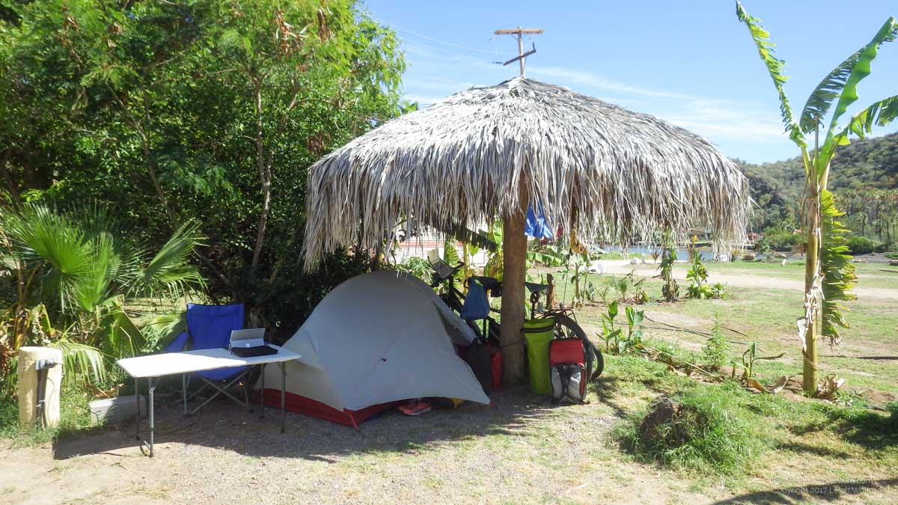
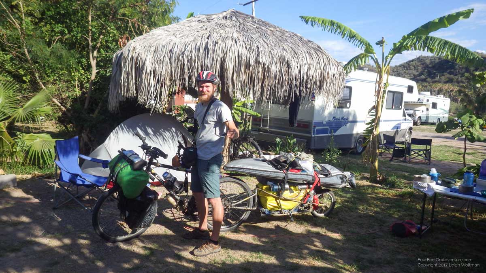
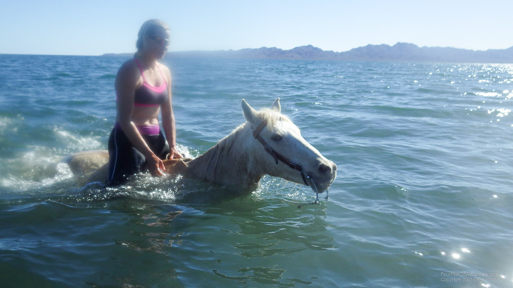

Mulege is an enchanting little village. Even though it’s Mexican, I would estimate that maybe around half of it’s inhabitants were non-Mexicans, escaping winter. The so called snowbirds. This phenomenon is very strange to me, as I don’t think I’ll ever skip a snowy winter, because I find skiing, fat biking, ice climbing and snowshoeing just too much fun. And, I don’t think I’ll retire that soon, well, after getting back to work that is, so this problem of weather to snowbird or not is not that much of an issue yet.
Anyhow, so, Mulege. The first morning after Leigh left, I heard some noise in the courtyard of the hotel I was staying. I looked outside and bumped into about 20 retirees who were preparing for their aerobics class. Of course I joined. Though it was a little depressing that I collapsed after one squat, I blamed it on overuse of the cycling muscles (my glutes were for the last 3 days constantly on fire). The others, most of them double my age or more, had no problem with the squats, weight exercises for their arms, and planks. Oh my. I learned that they had been doing this class 3 times a week for the last couple of months and thus were fit as a roadrunner.
It was interesting to hear their stories, they are from everywhere and have lived interesting lives. Most people were from the west coast of US or Canada, but also elsewhere on the American continent and there was even a German couple. We find that most of the snowbirds here are from BC (British Columbia, Canada) and we always joke that the abbreviation of the Baja California makes them feel at home :). The snowbirds own houses here or camp out for the season in rv’s.
From someone at the class I learned about a campground where some of them are located, I went to see, and ended up staying for the rest of my time here. It was quite a bit cheaper than a hotel, everybody was super friendly and I made lots of friends. The campground guy borrowed me a table, chair and extension cord for the electricity, so I had my own little office under the banana leaves.

There were also oranges, papayas and mangoes that were free to pick if you got there first. Great place! Within the first week, I had gone to a blues festival and 2 birthday parties. For the second birthday party I invited Pierre, a French guy who we had met about 2 weeks earlier in the middle of the desert and I found him the morning of the party in the camp site next to mine. He was cycling with an English guy when we met him 2 weeks earlier, but they had split since. Pierre doesn’t go very fast, he cycles with a bob trailer, just like us, except his is heavily loaded with a surfboard, gigantic fins for spearfishing, a wet-suit, and more equipment that the general cyclist wouldn’t bring, but he’s enjoying himself big time. The morning after the party we went for a snorkel together. In Mulege I had bought a snorkel set so I could turn my morning run into a run-swim-spot fish-swim-run. Lot’s of sting rays, but they seem very shy. This area also has whale sharks, I really hope we’ll bump into one at some point but no luck this far. Pierre and I just saw some “normal” fish. I waved him goodbye later that day, and hope to catch up with him when we’re back on the road.

It’s fun meeting these cyclists around you, as all of them have great stories and we all share experiences. The Baja has only one paved road, thus a lot of cyclists take it, most North to South. We generally all have the same speed of travel. We don’t always bump into each other, but usually know from other tourists who are cycling around us (the French guy, the Brazilian guy, the Dutch girl with the American, the New Zealand girl, and so on…). Every now and then a fast rider comes through, like Michael from San Francisco, who chatted briefly with us and said he would see us in 2 days since he was going to do a rest day the next day, only he was talking about a town more than 300 km ahead. As suspected, we never saw him again, but we heard about him from others. Leigh and I cycled for a while with another couple on a tandem, doing about the same distances daily. Fun and handy, since the first team to arrive could email the other team about accommodation, groceries and bike shops if needed.
Another thing to usually get in towns is drinking water. We have a UV filter so we can clean any water ourselves. However, most towns have a filtration system building in which you’ll find Mexicans with hair nets and outfits that make them look like their shift in a fish processing plant starts in 20 minutes. In the building are all kinds of filter systems and exciting tubes. Practically, you can just give them your water bottles or bag, and they will fill it for you. About 8 L can cost about 30 cents. Not worth the effort to clean the water ourselves time-wise (each liter takes time), super cheap and it doesn’t cost any plastic. We love these places.
Mulege had 2 water purification places, and usually I would get a ride back to the campground, or at least my water bag would get a ride and got delivered at my campsite by a helpful person who was not on foot, at some time later that day. I remember sitting in the back of an old Mexican pick-up truck with Leigh and a full water bag, bouncing away, seeing the beautiful purple flowers in the trees that decorate the town, waving at the old man who was sitting at the same bench every day, and feeling quite at home.
Then came pig-race Sunday, 9 piglets were collected who had to race 3 in one race and a final race with the winners. About 20 meter of line was set out 3 times parallel. The piglets were put in dog harnesses, clipped into a rope, and released at once. Each pig was encouraged by a man (but touching was not allowed) to run over the finish line. The piglets were master escapees, giving the betting crowd some extra excitement.
Time goes fast in Mulege, and there are always smiles and chats everywhere, but finally it was time to end our vacation and start moving again. There is a whole world to explore out there.
